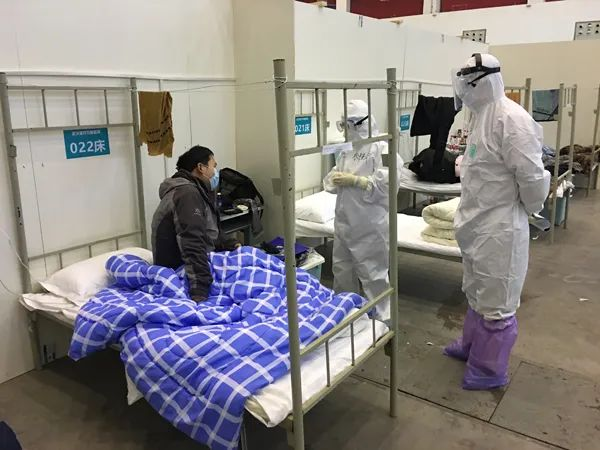
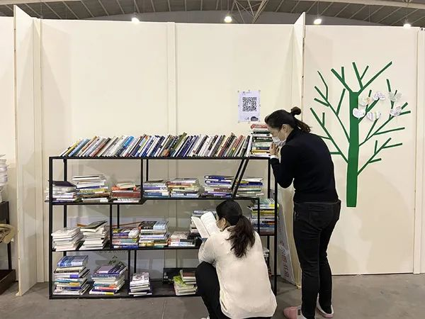

上海援鄂医疗队：我们不能治好肺炎就不管了
原文链接 备份链接 澎湃新闻记者 李佳蔚 郁斐 制图 进驻武汉第一天，上海医疗队就知道，要治愈的不仅是患者身体，治愈出院也不会是服务终点。 时至今日，事实证明他们做得不赖。 2月7日，上海中山医院第四批医疗队进驻武汉大学人民医院东院，整建 …
澎湃新闻记者 钟笑玫
方舱的晚上不关灯，墙、隔板也是一片白色。冯强第一次走进去，感到刺眼，他下意识想，有些患者也许会失眠，单调的颜色让人缺乏安全感。
冯强是同济大学附属东方医院的临床心理科医生，16天前的2月4日，他和54名同事组成应急医疗队，从上海出发驰援武汉，4天后，入驻建成不久的武汉客厅（东西湖区）方舱医院，上了第一个夜班。
他发现，刚进舱的患者会把这个布满床位的“大帐篷”想成仓库，而穿得像“外星人”的医护人员被划为“你们”，“我们”像是被“你们”遗弃了一样。
有的患者很焦虑，忧心尚未有发病症状的家人，未成年的孩子，自己的病情；也有19岁的少年，因抑郁有过轻生念头，但对医生闭口不言；还有一些人，正在艰难地面对失去亲人的“悲伤反应”。
在同一个方舱里，每个患者都有自己的故事，有的埋藏心底很深。冯强每天在这些情绪中穿行。

冯强和另一位心理医生在巡视病房，跟患者聊天。 受访者供图
2月13日，他和来自新疆、宁夏、广东的两名心理医生和一名心理护士，组成了武汉客厅方舱的心理干预工作组。
他们帮一些患者弄了床帘，发给他们志愿者捐赠的眼罩。在白色的墙壁上，装点绿色的树和彩色的宣传画。冯强也会把自己的微信二维码打印出来，贴在读书角的墙上、发给护士，走到哪手里总攥着一张，方便患者找到他。
冯强觉得，总会好的。疫情过后，他还要回一趟母校，武汉大学，再去爬一次珞珈山，去看看樱花。
以下是他的口述：
一
“这是不是一场演习？”到达医院时，还有人这样小声嘟囔。
集结号是2月3日傍晚吹响的：“支援武汉，集合待命”。当时武汉的雷神山和火神山医院都在建，很多人没有想到会有一次这么紧迫的集合。
我们医院有90多个人主动报名参加应急医疗队。接到集合通知后，不管正吃饭还是没吃饭，都赶紧打包行李赶去医院。
焦虑、紧张在蔓延。
有些年轻的护士才二十几岁，工作没几年，不知道要面对的是什么。就连工作近十年的“老江湖”也有点抓瞎，去不去、谁去、去多久都是不确定的。
大概晚上10点左右，55人的名单宣布了。知道要去后，很多人心就定了，开始往集装箱内搬物资。
仔细观察，你会发现，名单之外的医生的心情也很复杂，有点失落，有点轻松，又有点自责内疚，在送别的氛围中还有些感伤和担忧。没人哭出来，但我现在回忆起来倒是想哭，挺感动的。
第二天，火车站送别，我们都穿着统一的制服、拉着统一的箱子，就像军人穿着军装一样自豪。不单媒体，游客也给我们拍照。
但坐上火车，轻松气氛就慢慢消失了。
一开始是有列车员跟我们讲，车上有去武汉的乘客（不确定有没有接触史），不要乱走动。
有的护士跟父母通视频，说着说着声泪俱下。她们也知道这样父母会跟着揪心，但就是控制不住。有队员跟我讲，听到播报“武汉站到了”的时候，心都感觉要跳出嗓子眼了。
我从事精神卫生工作8年，出发前我就想好，要时刻注意队员们的情绪变化。但我也不敢强调这个，主要是怕他们可能有压力——谁跟我走近点、多说几句话，可能就涉嫌心理脆弱了。
我能感受到被回避。比如坐车来回方舱医院的时候，双人座我坐了一个，旁边的位置就没人坐，就算有人坐那人也很不自然。
我只能往群里多发些《抗疫·安心》这样的科普读本，平时尽量把自己跟他们同化为医生，而非凸显自己是心理医生。
最初的一周，我被安排作为内科医生进舱。其他医生也一样，不管原来是什么科室的，现在都统一负责新冠肺炎的诊治。
让患者得到治疗，这是首要任务。你身体健康都不能保证，哪来的心理（治疗）？就医有保障、信息通畅，也是有利于患者不往焦虑和抑郁发展的。
二
2月4日傍晚，我们到达武汉，第二天一早就奔赴武汉客厅方舱卸物资、搭帐篷。2月8日凌晨两点，我上了第一个夜班。
客厅方舱晚上是不关灯的，一进舱，灯光很刺眼，我下意识就想到，有些患者会失眠、精神不太好。墙、隔板一片白色，很单调，让人没有安全感。
陌生的环境可能让一些人想起仓库，再加上一些穿得像外星人的医护人员，衣服上写着的一些外地地名，患者可能会把里面的人划分为“你们”和“我们”，觉得“我们”孤立无援、像是被“你们”遗弃了一样，陷入恐慌。
有些患者会跟我说，你们是不是觉得我们太危险了，不要我们了。
其实有这些心理都很正常，因为刚到一个环境，人搞不清楚状况，多少会缺少安全感，更别说身处疫情之中了。
我会安慰他们，说我们也是医生护士，这里也叫医院。我们也帮一些患者弄了床帘，志愿者也捐了眼罩过来。墙上除了党旗、国旗，还贴上了绿色的树、彩色的“患者心理护理及调适”宣传画、读书角、电视、移动充电宝、暖气片等物品，也让大多数人的心态都慢慢稳定了下来。

冯强和另一位心理医生在墙上张贴《患者心理护理及调适》 受访者供图
有患者跟我说，这边管吃管喝、免费治病、也不会像在社区一样给别人带来恐慌，一旦病情有点变化，医护人员立刻就能反应。他们住下来很安心，不太想出院。
其实医生的感受比较复杂。一方面想要帮助病人，一方面时刻会提醒自己病毒无情，做什么事情需要谨慎，包括不要靠病人太近。
隔离衣、防护服、口罩、面罩、两层手套、两层鞋套……这样的装备穿在身上，我们不仅呼吸不畅，眼镜里蓄着“雾水”——眼镜片上起的雾多了，形成水滴下来嘛。耳朵被口罩皮筋勒得像刀割，鼻子被护目镜压得像是被打了一拳一样酸痛。在这种躯体负荷下，情绪会比较容易烦躁，注意力不能持久。防护服比较容易被暖气烤坏，鞋套容易磨破，有的医护就会带着恐慌工作。
气溶胶传播的可能性在一开始还只是听说，有的医护人员就会觉得周围空气都是病毒，有明显的超价观念（精神医学的一个专业名词，指某种强烈情绪加强并在意识中占主导地位）。
夜晚还是比较冷的，还好我们的医生站有两个电暖器，可以烤一下。一起搭班的是重庆医疗队的，大家都紧张地进入了各自的岗位，书写病历和处理病人医嘱。每个人好像严重的近视眼，头基本上贴到了电脑的屏幕上，打字也好像老奶奶一样，一个一个字母看着打。
一个福建医疗队的队员不经意间提醒我，也许我靠近电暖器太近了，把右腿的防护服烤漏了。我一看，吓了一跳，马上觉得病毒无孔不入进入到我的衣服里面了，立刻用消毒水一顿狂喷，然后拿透明胶布把烫漏的裤子粘了起来。
时间不快不慢地过着。我作为内科医生，上了3个班次。上周，也算是“找到了组织”——新疆和宁夏援鄂医疗队各有一个心理医生，广东队里有一个心理护士。我们四个人组成了一个心理咨询小组，轮流入舱，专职负责方舱内1400名左右患者的精神科会诊和心理援助。
三
精神卫生的问题和传染病不一样，发病率一般都是1%，多的时候百分之十二三，不会是“断崖式”爆发。我们所面对的患者在整个方舱里是零星点缀的。
比如说，100个病人里面只有几个需要去干预，甚至吃药的。其他人都是一些情绪问题，只要给予教育、宣泄和疏导就可以，减少他们出现抑郁症、PTSD（创伤后应激障碍，指个体经历、目睹或遭遇到一个或多个涉及自身或他人的实际死亡，或受到死亡的威胁，或严重的受伤，或躯体完整性受到威胁后，所导致的个体延迟出现和持续存在的精神障碍）的可能性。
每位医生一进舱，不管A、B、C哪个厅出现了相关情况，都要负责，比如我在舱内的时候发现了某患者的焦虑情况，下次另一位心理医生进舱时可能再会去跟他交谈。
目前我们有两种方式触及患者，一种是医生、护士、志愿者反馈给我们，另一种是我们自己巡视发现。
如果是白天的班，我会重点关注躺在床上的人，蒙在被子里或者睁眼发呆的，想着他们是不是有心事昨晚没睡好、或者比较消沉。要是晚上，我就会跟到处溜达的人聊几句，他们是不是因为某些事情失眠。
比如上午的时候，一个人蒙着头睡觉，我们会叫醒他，问“帅哥，你怎么了，昨天没睡好吗？”有的青少年会说不要管他，他就想睡。
大多数患者都比较配合，因为医生在关心他嘛。有的人会说自己只想缩在床位里，怕到处活动病情加重。有的人马上就坐起来，说起自己失眠的情况。一般我都会跟他们多聊几句，这跟我们平时在门诊“守株待兔”的状态不一样，“主动出击”才能触及到更深层次的情绪问题。
比如有位女患者一开始说因为认床睡不着。我关心了几句，她才说自己和老公都感染新冠，但是老公现在住在另外一个方舱里，她很发愁，想要转舱。
其实这种问题我是没法解决的。我只能安慰这个女患者遵医嘱，锻炼身体尽快出院回家，跟老公在家里见面。诸如此类的，还有患者想要催着快点拿药、拿到检查报告、孩子不满18岁但想要跟孩子同舱治疗等等。
除了失眠，我们还碰到过焦虑和抑郁的患者。
有位焦虑的女患者会一直忧心没有发病症状的老公会不会被“抓走”，黏着医生不让走，问了一遍“会不会被抓走啊？”医生安慰了她半天，就像没听见一样，又再问“抓走是不可能的对不对？” 还有检查结果、药、家里未完成的事、包括自己的病会不会好，都有可能成为他们焦虑的主题。
有位抑郁的19岁男孩，听到“心理医生”四个字就非常抵触地说“我想睡觉，我没有问题，我不想说话！”但是护士和医生查房的时候，从周围患者那了解到，他有过轻生的念头。
我和另一位来自新疆的心理医生张桂青跟男孩接触了两次。第一次他是排斥的，张医生说这种是混熟了才好说话，隔了一小时我们又去找他。
张医生告诉他，“我们又来了，看看是不是可以聊聊呢？”他说“我没有病。”张医生说“不一定有病我们才聊啊，我们会和很多人聊的，你看我们都聊了一圈回来了。”
这时候，男孩坐起来了，开始告诉我们自己睡得不太好，但不需要辅助睡眠的药物。张医生告诉他“你这么年轻，很快病毒就会被你的免疫力杀死的，你需要的话，医生会随时给你帮助的。”他本来是不怎么跟我们有目光接触的，听到这句话，他抬起头，我从他的眼神里看到他得到了一些安慰，然后赶紧抓住机会，向他推荐了一个抗疫心理音频，他主动扫上了。

方舱有三个电台供患者收听，分别是：武汉本地电台、方舱电台、上海人民广播电台，患者可以在闲暇之余听听电台的专项心理疏导节目。 澎湃新闻记者 赵思维 图
这里需要提醒一点，平常心理咨询遇到的目光不接触以及身体不会正向面对你等情况，在这里不一定就能说明这个人内向或者回避沟通。
有个网络工程师，心态特别积极，把电脑带进来每天工作，还给我展示他之前给医院设计的办公平台。我跟他聊的时候，他侧身不看我，跟我解释“对不起，这不代表我不礼貌，而是不想正面说话（导致）空气喷过去增加你们的危险”。这种患者真的特别贴心。
这次疫情凶猛，一些住进方舱的患者失去了家人。目前我接触了3位患者，分别失去了父亲、母亲和丈夫，有不同程度的“居丧反应”（失去所爱的人后的一种自然反应。与死者关系越密切的人，产生悲伤反应也就越严重。猝然死亡，引起的悲伤反应最重）。
一位失去父亲的女患者，在朋友圈写了一大段的哀悼文字，回忆父亲特别善良，曾经让找不到酒店的陌生人住在家里，但是这么善良的人在患新冠肺炎离世之前，很难得到床位和找到车去医院急救。她是哀伤中带着怨气的，创伤有点大。
我没入舱的时候，托跟她接触的医护人员把我的微信给她，她也不加。今天（2月19日）另外一位心理医生入舱了，他会去了解一下这个患者的情况，进行干预，帮助她顺利度过这段时间。
四
其实我做好了心理准备，很多病人可能会有病耻感，不太愿意去求助心理医生，怕被人看轻。而且有些人会觉得心理医生不管用，只是随便聊聊，觉得这种治疗都是胡扯的。
特别是有些中年男性，平时抽烟、酗酒、闷声不响，其实有很严重的抑郁症和焦虑症。他们害怕暴露自己，在别的男性面前“没面子”。
我们在巡视过程中，看到还是有很多的人在床上看手机。我一开始感慨，手机让大家都着迷在虚拟的时空中，一方面我们的视野更大了，可以躺在床上看世界，一方面人更孤独了。但我又意识到，在这个特殊时期，也许手机让更多人可以进行自我隔离，也可以通过手机宣传我们心理卫生的工作。
所以我开始“发传单式宣传”，把我的微信二维码打印出来，贴在读书角的墙上、发给护士，走到哪手里也攥着一张。

读书角上方的墙上，张贴着冯强的微信二维码。 澎湃新闻记者 赵思维 图
我也会定期在我们医护人员的群里发一些短视频，宣传心理健康。如何改善睡眠，或者如何改善我们应对新冠的医务人员的情绪等等。目前为止，只是有些队员会问我失眠怎么办，还没人私下找我深聊。
抢救室不用的时候，我们预计把它作为一个临时心理干预的工作室。那里有窗户，通风比较好，还有凳子，可以坐着聊久一点，而且比较私密。不过暂时还没有患者进去过。
据我所知，目前在武汉的一线精神科医生是70人左右。我也会跟其他方舱医院的心理医生交流。有的方舱医院开舱不久，心理医生还没有专职做这方面的工作。而且整个方舱要是只有他一个（心理）医生的话，他也会觉得孤军奋战，会有压力感。
我们有个专家后援团，大多是从事临床心理科数十年的“老江湖”。他们给了很大的支持，经常会发一些“干货”到群里给我们看。如果我们遇到疑难个案很难处理，就可以通过这个后援团找到一个资深的教授或者主任医师指导。
网上的心理咨询热线也是一个很重要的途径。很多武汉市民以及愿意主动寻求心理咨询但害怕在方舱这个“小社区”内暴露的患者会去拨打心理热线。
不论什么途径，我希望每个人都能怀着一个健康的心态度过疫情，总会好的。我本科是在武汉大学医学院上的，等结束了，我想回去一趟，见见老师，应该也能见到这次疫情的战友，爬一次珞珈山，看看樱花。
戳这里进入
“全国新型冠状病毒感染病例实时地图”↓↓↓
本期编辑 周玉华
推荐阅读


原文链接 备份链接 澎湃新闻记者 李佳蔚 郁斐 制图 进驻武汉第一天，上海医疗队就知道，要治愈的不仅是患者身体，治愈出院也不会是服务终点。 时至今日，事实证明他们做得不赖。 2月7日，上海中山医院第四批医疗队进驻武汉大学人民医院东院，整建 …
原文链接 备份链接 住进武昌方舱的第二天，付丹看到有人在垃圾站收拾，将在地上扔得乱七八糟的垃圾捡起来放到垃圾箱里。她感到有些奇怪，清洁工怎么没有穿防护服呢。一问，原来那人是住在同一个病区的病友，住在159号床。 文***｜******* …
原文链接 备份链接 “我在窗台旁看了很长一会雪，特别想家，我们也在问什么时候结束。” “病友们觉得床上有电热毯，冷的话躲在被窝里就行了。医护人员没什么地方可以躲，所以除了个别患者有畏寒的情况，就让医护人员优先用（取暖设备）。” *“一 …
原文链接 备份链接 方舱的概念来源于军事领域。 不仅仅是患者，对很多医护人员来说，也是第一次接触。 2月5日晚，3家方舱医院启用，分别位于武汉洪山体育馆、武汉客厅、武汉国际会展中心，现在还有多家方舱医院正在修建。 这意味着万余名轻症患者可 …
原文链接 备份链接 澎湃新闻记者 赵思维 发自武汉 2月6日下午，江汉方舱医院内，一名协和医院的女护士轻声播音一段初来的问候。来源：@武汉发布(01:17) “初来陌生的环境，您可能不太适应，甚至感到紧张或焦虑，我们能够理解。希望大家能跟 …